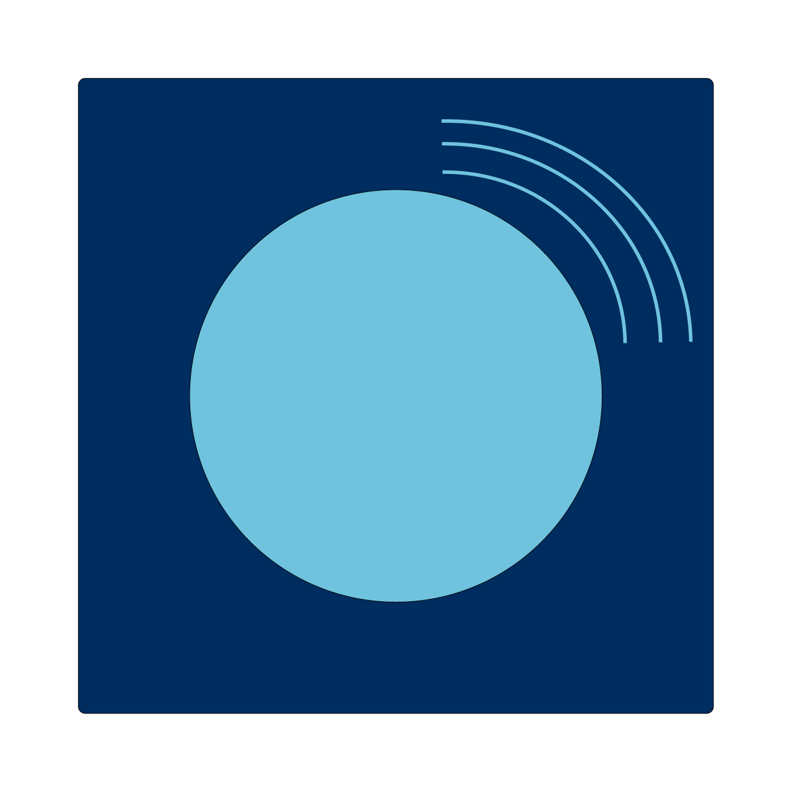
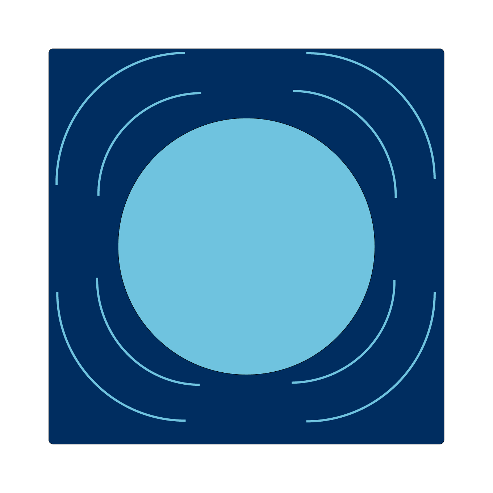
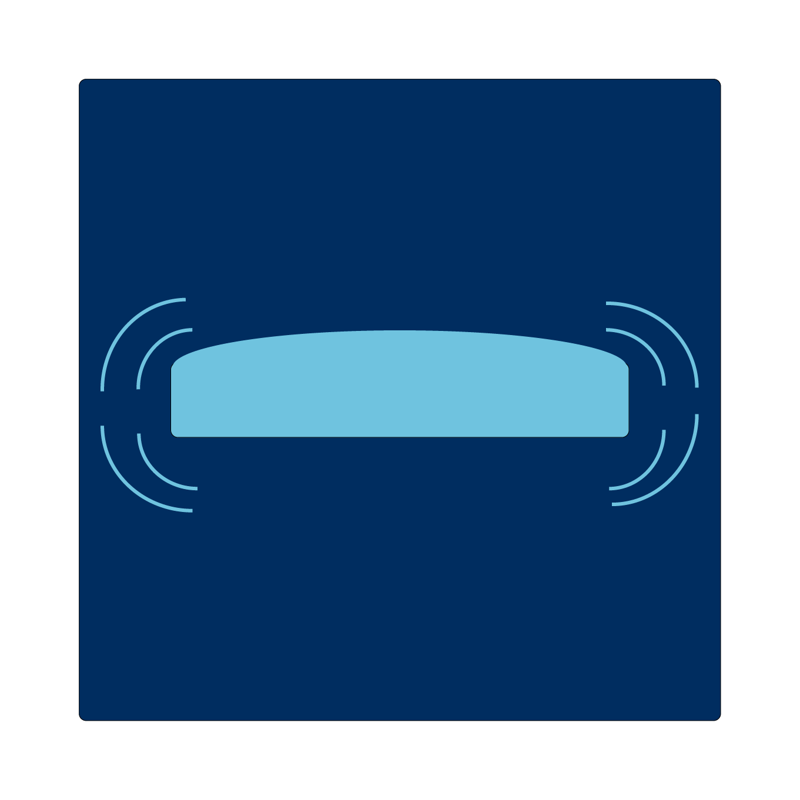
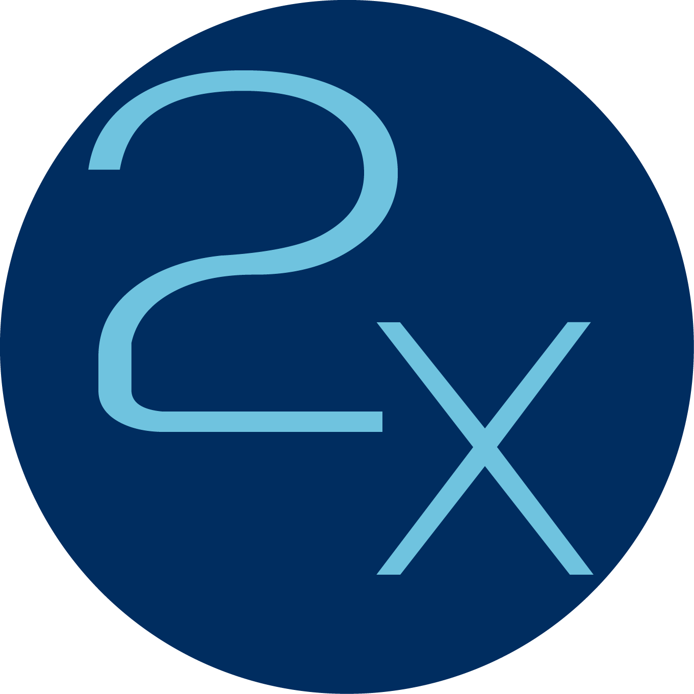

<div class="container-tutorial">
    <div class="parent-data-tutorial">
        <p>There are currently 3 power-ups in the game:</p>
        <figure>
            
            <figcaption>A slower ball</figcaption>
        </figure>
        <figure>
            
            <figcaption>A larger ball</figcaption>
        </figure>
        <figure>
            
            <figcaption>A larger palet</figcaption>
        </figure>
        <p>This power-up is only available in Multiplayer:</p>
        <figure>
            
            <figcaption>Your point will be multiplied by 2</figcaption>
        </figure>
    </div>
    <div class="padger-dots">
        <div class="ball ball-active"></div>
        <div class="ball"></div>
        <div class="ball"></div>
    </div>
</div>
